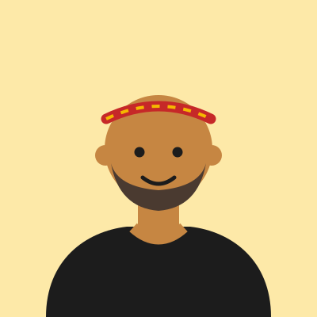

Adalberto
Fundador e professor de Muay Thai
Ensino inclusivo- Experiência
- Fundou a academia e é o professor de todas as turmas de Muay Thai, incluindo a aula gratuita de sábado.
- Especialidades
-
- Muay Thai para iniciantes
- Clinch e condicionamento
- Preparação de atletas amadores
- Premiações
-
- Medalhista em torneios amadores de Muay Thai em São Paulo
- Homenagem da comunidade de Itaquera pelo trabalho social (2023)